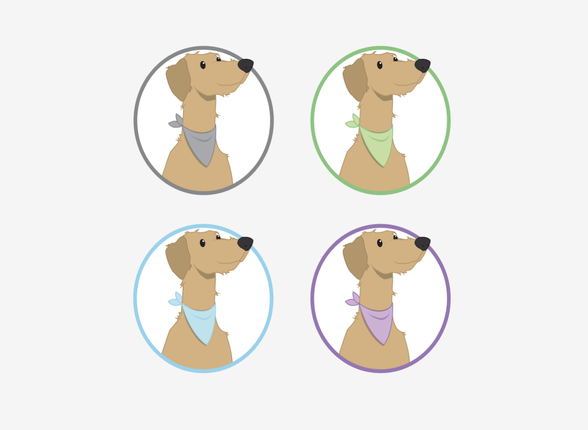
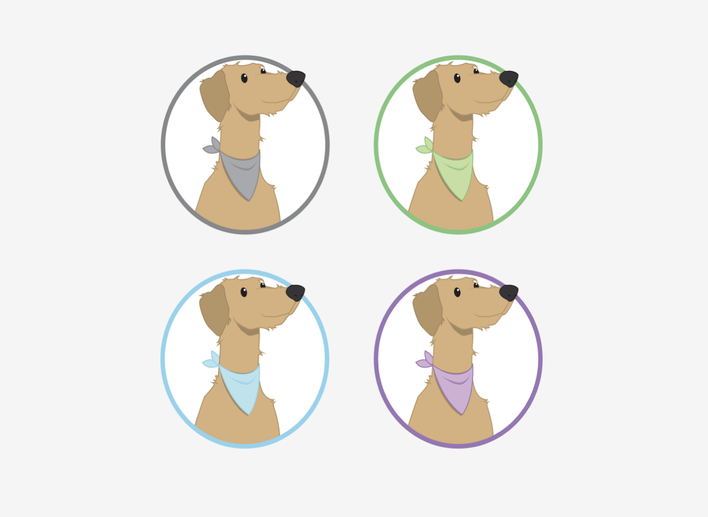
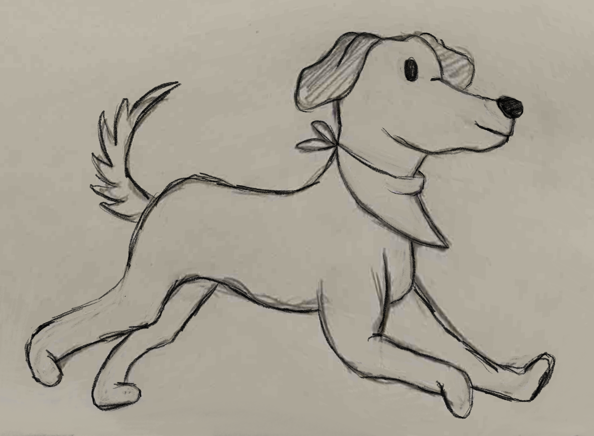
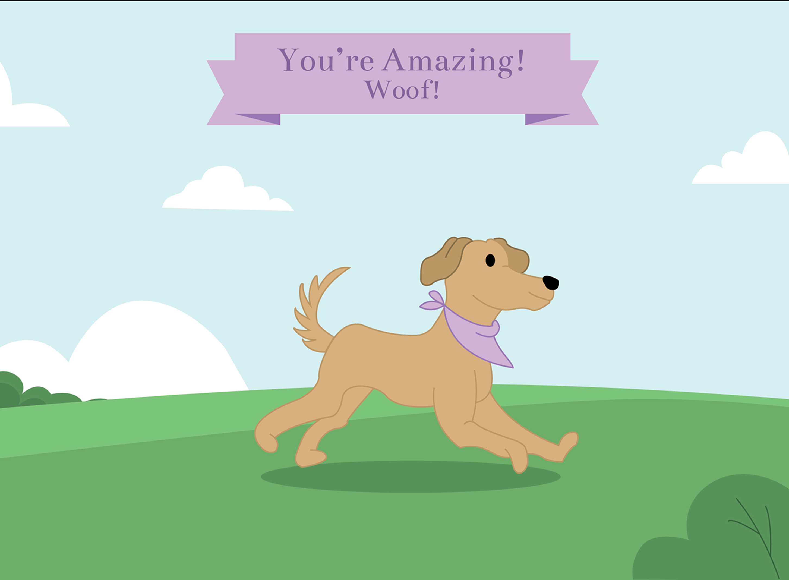

For the project, my main role was to design the mascot for our cards. We decided the mascot should be a dog because it would be like a therapy dog which fits the self help aspect of our project.
I sketched out two options and then vectorized the chosen one on illustrator with 4 different colors so that the colors would match with the cards, and a neutral one for the box.
 

I then also sketched out another version of the dog that was then vectorized and used for one of the reward posters.
 